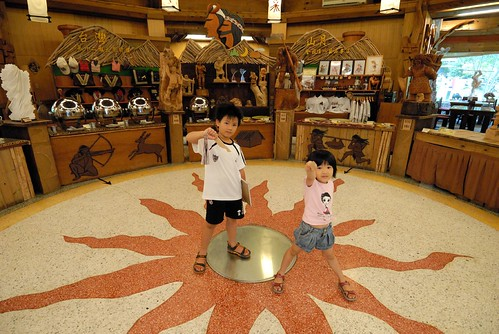
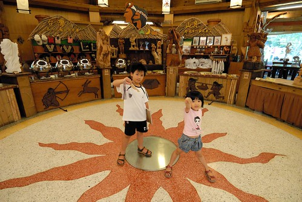

“布洛灣是以前太魯閣族部落 意指”回音” 布洛灣是個四週完全被青翠山嶺包圍的台地 像是個遺世獨立的桃花源 時間在這裡緩了下來… 而山月村本來是榮工處聚點 荒廢許久 經過一番整理改建後於2004年正式營運 飯店類似村莊聚落的規畫 保留著濃濃原住民原始風格 而最特別的是客廳移到室外 白天可以在客廳乘涼賞景 而晚上可與家人談天觀星..” 以上皆摘錄自飯店網站上的介紹 我覺得這些話很適切地介紹與形容出布洛灣山月村的好與獨特處 在這裡真的覺得時間緩了下來 但當要離開的那刻卻又忍不住感嘆時間怎麼過這麼快.. 在這裡很游手好閒 因為盡是混在房子的延廊下看山 發呆… 在這裡很幸福 就如它在今年度觀光局舉辦的”幸福旅宿 百種感動”比賽中獲得最幸福獎那樣.. 雖然我是個很容易對民宿滿足 常容易被亂感動一把然後就嚷著以後要再去 但這次真的很想很想明年夏天再來這裡空…
山月村就從布洛灣國家公園管理處旁的一條美麗小徑上去
小徑的盡頭是一個讓你看不出來這裡能有些什麼的圓環與飯店小大門 但是穿過飯店的小小大廳後 映入的便是這樣被群山環繞的開闊 雙併的小木屋裡 只有簡單的三個床鋪 簡單的電視櫃 但感受到濃濃原木溫暖與不多不少 恰到好處的原住民風格 而最重要的佈置是那四大片可以對外一覽無遺的窗戶 而這個房間外的客廳真的超級地迷人 吸引人 讓我就這樣攤在這… 開始空… 我跟徹爸在室外想受這氛圍的同時間 徹跟愛也在房內享受屬於他們的氛圍 每次住外面 徹愛都可以馬上進入狀況地開始爸爸媽媽的辦辦家酒遊戲 她們這個辦辦家家庭搬過好多家 住過好多地方喔 每次都說這裡真漂亮 這裡真好 除了遊戲外 另外很多的時間愛愛一個人靜靜地在這個小角落畫圖 這一幕很迷人 不知道是放鬆還是怎樣 我超級地想要來一場午覺 於是我跟徹爸在沒有冷氣沒有電風扇下 睡了場舒服的午覺 那陣子睡眠狀況不好的我難得地一躺下就睡著了 直到五點 徹爸驚醒說”該是起床 去外面走走了” (同時間徹愛不管睡翻的爸媽 自己玩翻了) 散步在村子裡 首先被吸引的是這棵沒有樹葉的樹 跟今天的陰天很搭配 我們拿著入房時拿的闖關活動單張 一一去尋找題目的答案 還順道走了村子裡的生態步道 短短幾百公尺的原始森林裡聽說會有蛇 山羌 飛鼠的出沒喔 (以為會有的夜間生態步道解說 因遊客過多取消 頗讓人遺憾) 這是闖關題目所提及的作品之一 都市人的我們錯把村狗當狼 讓改答案的服務人員啞然失笑 作品之二 “想飛” 題目是距離這個作品最近的房號是幾號 阿徹認真的計算步伐確認答案 媽媽飛完換愛愛飛 然後我們兩個一起飛 活動中心前的裝置 徹愛跟著一起跳舞 小舞者愛愛玩的欲罷不能 看的阿徹哥哥也躍躍欲試 不過我說這算哪門子跳舞阿 是在擺POSE照相吧 大家都說這各拿著刀 大闊步走的勇士真可愛 可是只有我願意犧牲 不怕醜的學他 雖然天氣不太好 但是村內還是可以看見很多蝴蝶飛舞 這是疊在一起 邊飛邊交配的兩隻蝴蝶喔 是視力一極棒的阿徹發現的 結的超美麗的蜘蛛網 莫非這裡的蜘蛛也是原住民族 有著編織好手藝 6點時分 飯店工作人員很忙碌 忙著準備晚上晚會  自助BBQ晚餐的準備 飯店門口的烤山豬肉 香的讓我們原本不餓的肚子馬上餓了起來 期待著晚餐 趁著去大廳兌換闖關的小禮物 我們好好地看大廳的每個裝置  當中一幅幅紋面的太魯閣耆老照片 真實 傳神又色彩美麗的讓我們每次經過都忍不住多看幾眼 散完步 還沒到6點20的放飯時間 於是我們又窩在我們的客廳了 阿徹蓄勢待發的削好鉛筆 說要寫遊記 認真的寫起遊記 同時間愛愛在房內的最愛小角落忙她自己的 而我跟徹爸這愛照相夫妻玩起大頭狗拍 現在看照片 覺得徹爸這一刻笑的真的有開心喔 畢竟旅行都是老婆在主意的 而很多時後 其實徹爸都覺得還好而已 但他還是很盡責地扮演好司機兼伴遊的角色 所以每當看到徹爸好像真的跟我一樣喜歡一個地方時 我就會更特別的開心 6點20分 所有房客在餐廳坐妥後 一陣鼓擊及全體員工齊聲喊的”吃飯了”後 大家一起開動嚕~ 菜色沒法像大飯店那樣的多樣 但就地取材的菜色好新鮮 好實在 涼拌山蘇 秋葵 山豬肉 西寶的蔬菜 烤雞肉 烤鯛魚 蝦子 烤山豬肉 烤筊白筍 山苦瓜湯 簡單的料理方式 但每樣都好好吃 吃的我們飽到一整個不行 幸好晚上8點20的晚會前還有30分鐘的時間 可以讓我們躺在床上好好休息過飽的肚子 晚會時間一到 大部分房客又都準時地集合在活動中心前面 阿徹挑了個正中間的第二排位子 其實我們也知道前面的那排鎮木是不會有人坐的 所以這是我們覺得這是最佳的位置 不過徹爸說 後面有椅子的位置比較舒服 所以我們兵分兩路(後來徹爸又循著愛愛回來一起坐了) 晚會是由飯店員工所主持 就如第一個主持的男生所說”我是切豬肉的 大家剛剛晚餐應該有吃到我切的豬肉” “在我們這裡工作的員工除了要會收盤子 烤豬肉 切豬肉外 還要會拿麥克風上台” 而表演的人員 聽說有A B C三團 A團是飯店的員工 B團是兒童團 C團是教會的人員 今日因為客房滿房 員工有太多盤子要洗 所以是B團兒童團的表演 呵呵 兒童團最小4歲 最大17歲 有的人從5歲跳到現在小學畢業 雖然每個人都很羞拈 舞步不是太放的開 也根本離專業很遠 但是很真誠 而那兩個吵著要跟姐姐一起來表演的4-5歲娃 常脫稿的小動作引發房客一陣陣的笑聲 超級可愛的 除了太魯閣族的舞蹈表演外 還有木琴演奏 那天每個拿主持棒的人都特別強調 全國木琴比賽第一第二跟第三名的都在他們飯店裡喔 不過只有三組人參加比賽啦 所以才都在這裡 呵呵! 還有口簧琴表演 是一開始的”切豬肉”的男生表演 他笑說他也只會一首 因為昨天晚班不是他(晚班的才需要表演) 而明天觀眾應該又都不一樣 所以會一首就夠了 呵呵 晚會第二個主持人是晚餐”烤肉的” 也是一個能言善道 還能自彈自唱的全能員工 晚會進行到9點半多 飯店人員收拾好晚餐殘骸後 部分也一起加入晚會中 由村長本人接手主持的工作 左邊是村長 右邊是飯店以前的廚師後來得過金曲獎最佳原住民歌手 剛從大陸巡演回來山村拜訪 然後就被村長拖下水來表演幾首歌 有著很渾厚嘹喨又感人的歌聲 村長主持的後半段晚會中 一方面到處亂點名員工表演 一方面聊著他對山村的理想與堅持 聽著他講述一些山月村爭取營運 開始營運時的辛苦 雖然他像是說笑話似的講著 而台下的我們也聽著一起笑 但我們知道這一路走來的辛苦真不是三言兩語便能道盡 也不是我們所能完全體會揣摩的 第二天剛好看到房間裡有一本村長姐姐寫的有關山月村介紹的書 更是仔細地了解村長從開始一直以來的信念與堅持 他說 原住民最需要的就是給他工作機會 有工作有錢他就能養小孩好好過日子 所以飯店只用當地原住民員工 (村長跟副村長是山月村裡唯二不是原住民的員工) 員工也真的如他所預期做的很棒 甚至超乎預期的棒 而成立兒童團 讓小孩賺錢表演也只是為了讓他們可以幫助點家裡 但是因為小孩子的表演費用都是由飯店直接給她們父母 為了給小朋友一些獎勵 晚會的最後會有小費箱讓觀眾自由投入 一半作為當日表演小孩的零用錢 一半作為山村基金會的捐款整場晚會看的很認真 直說著好好看的阿徹也捐出他兩週的零用錢 雖然金額很小 但是我們小小的心意 希望這些小孩子能夠不辜負村長的美意 走出屬於自己的真正道路 晚會出乎我們意外的長 從8點20分開始直到快10點半才結束 雖然整個表演流程不是很緊湊 表演的內容也不是很專業 就像以前小學時開同樂會那樣 同學輪番上陣表演自己的拿手好歌或是技藝而已 沒有明星味沒有秀味但卻有實實在在傳遞給在場每個人的那份真誠心意 而且透過晚會上每個主持人的介紹讓我們多認識了很多太魯閣族文化 例如 村長說太魯閣族人每個人家裡都會有一把刀 除了拿來砍獵物外也是陣邪用的 所以如果小孩做惡夢 只要把刀子放在枕頭下一晚 小孩就不怕了 而平常刀子得平平正正的擺好在刀架上也才不會引來….. 那天晚上阿徹把我們房間鑰拾還有他的那把刀子好好地立在房間刀架上 真巧! 愛愛跟阿徹那晚都做了個好夢ㄋ
自助BBQ晚餐的準備 飯店門口的烤山豬肉 香的讓我們原本不餓的肚子馬上餓了起來 期待著晚餐 趁著去大廳兌換闖關的小禮物 我們好好地看大廳的每個裝置  當中一幅幅紋面的太魯閣耆老照片 真實 傳神又色彩美麗的讓我們每次經過都忍不住多看幾眼 散完步 還沒到6點20的放飯時間 於是我們又窩在我們的客廳了 阿徹蓄勢待發的削好鉛筆 說要寫遊記 認真的寫起遊記 同時間愛愛在房內的最愛小角落忙她自己的 而我跟徹爸這愛照相夫妻玩起大頭狗拍 現在看照片 覺得徹爸這一刻笑的真的有開心喔 畢竟旅行都是老婆在主意的 而很多時後 其實徹爸都覺得還好而已 但他還是很盡責地扮演好司機兼伴遊的角色 所以每當看到徹爸好像真的跟我一樣喜歡一個地方時 我就會更特別的開心 6點20分 所有房客在餐廳坐妥後 一陣鼓擊及全體員工齊聲喊的”吃飯了”後 大家一起開動嚕~ 菜色沒法像大飯店那樣的多樣 但就地取材的菜色好新鮮 好實在 涼拌山蘇 秋葵 山豬肉 西寶的蔬菜 烤雞肉 烤鯛魚 蝦子 烤山豬肉 烤筊白筍 山苦瓜湯 簡單的料理方式 但每樣都好好吃 吃的我們飽到一整個不行 幸好晚上8點20的晚會前還有30分鐘的時間 可以讓我們躺在床上好好休息過飽的肚子 晚會時間一到 大部分房客又都準時地集合在活動中心前面 阿徹挑了個正中間的第二排位子 其實我們也知道前面的那排鎮木是不會有人坐的 所以這是我們覺得這是最佳的位置 不過徹爸說 後面有椅子的位置比較舒服 所以我們兵分兩路(後來徹爸又循著愛愛回來一起坐了) 晚會是由飯店員工所主持 就如第一個主持的男生所說”我是切豬肉的 大家剛剛晚餐應該有吃到我切的豬肉” “在我們這裡工作的員工除了要會收盤子 烤豬肉 切豬肉外 還要會拿麥克風上台” 而表演的人員 聽說有A B C三團 A團是飯店的員工 B團是兒童團 C團是教會的人員 今日因為客房滿房 員工有太多盤子要洗 所以是B團兒童團的表演 呵呵 兒童團最小4歲 最大17歲 有的人從5歲跳到現在小學畢業 雖然每個人都很羞拈 舞步不是太放的開 也根本離專業很遠 但是很真誠 而那兩個吵著要跟姐姐一起來表演的4-5歲娃 常脫稿的小動作引發房客一陣陣的笑聲 超級可愛的 除了太魯閣族的舞蹈表演外 還有木琴演奏 那天每個拿主持棒的人都特別強調 全國木琴比賽第一第二跟第三名的都在他們飯店裡喔 不過只有三組人參加比賽啦 所以才都在這裡 呵呵! 還有口簧琴表演 是一開始的”切豬肉”的男生表演 他笑說他也只會一首 因為昨天晚班不是他(晚班的才需要表演) 而明天觀眾應該又都不一樣 所以會一首就夠了 呵呵 晚會第二個主持人是晚餐”烤肉的” 也是一個能言善道 還能自彈自唱的全能員工 晚會進行到9點半多 飯店人員收拾好晚餐殘骸後 部分也一起加入晚會中 由村長本人接手主持的工作 左邊是村長 右邊是飯店以前的廚師後來得過金曲獎最佳原住民歌手 剛從大陸巡演回來山村拜訪 然後就被村長拖下水來表演幾首歌 有著很渾厚嘹喨又感人的歌聲 村長主持的後半段晚會中 一方面到處亂點名員工表演 一方面聊著他對山村的理想與堅持 聽著他講述一些山月村爭取營運 開始營運時的辛苦 雖然他像是說笑話似的講著 而台下的我們也聽著一起笑 但我們知道這一路走來的辛苦真不是三言兩語便能道盡 也不是我們所能完全體會揣摩的 第二天剛好看到房間裡有一本村長姐姐寫的有關山月村介紹的書 更是仔細地了解村長從開始一直以來的信念與堅持 他說 原住民最需要的就是給他工作機會 有工作有錢他就能養小孩好好過日子 所以飯店只用當地原住民員工 (村長跟副村長是山月村裡唯二不是原住民的員工) 員工也真的如他所預期做的很棒 甚至超乎預期的棒 而成立兒童團 讓小孩賺錢表演也只是為了讓他們可以幫助點家裡 但是因為小孩子的表演費用都是由飯店直接給她們父母 為了給小朋友一些獎勵 晚會的最後會有小費箱讓觀眾自由投入 一半作為當日表演小孩的零用錢 一半作為山村基金會的捐款整場晚會看的很認真 直說著好好看的阿徹也捐出他兩週的零用錢 雖然金額很小 但是我們小小的心意 希望這些小孩子能夠不辜負村長的美意 走出屬於自己的真正道路 晚會出乎我們意外的長 從8點20分開始直到快10點半才結束 雖然整個表演流程不是很緊湊 表演的內容也不是很專業 就像以前小學時開同樂會那樣 同學輪番上陣表演自己的拿手好歌或是技藝而已 沒有明星味沒有秀味但卻有實實在在傳遞給在場每個人的那份真誠心意 而且透過晚會上每個主持人的介紹讓我們多認識了很多太魯閣族文化 例如 村長說太魯閣族人每個人家裡都會有一把刀 除了拿來砍獵物外也是陣邪用的 所以如果小孩做惡夢 只要把刀子放在枕頭下一晚 小孩就不怕了 而平常刀子得平平正正的擺好在刀架上也才不會引來….. 那天晚上阿徹把我們房間鑰拾還有他的那把刀子好好地立在房間刀架上 真巧! 愛愛跟阿徹那晚都做了個好夢ㄋ
第二天早上我們睡到8點自然的醒來 去餐廳用完早餐後便又四個人各自在房間一隅忙or空 我在看書 愛愛一下在客廳一下在房間那小角落畫畫 而阿徹則跟徹爸打了一小段羽球 然後還把他的遊記完成了 雖然很平舖直述但竟也洋洋灑灑一整頁哩 算是有誠意 山月村其實真的就像村長自己所說 ‘’ 這裡真的什麼都沒有 沒有游泳池 沒有spa(他說以前有客人為此還跟飯店吵架) 沒有兒童遊憩室 電玩室 健身室… 什麼都沒有 所以除非真的很喜歡這裡 要不然待不下去…’’ 挺高興我們家四個人在這裡都呆的很高興 還從第一天的3點可以check-in時間呆到隔天早上11點最晚的check-out 足足足的哩~  而且這裡好像是徹爸第一次在事後會跟我說 哪個時候我們再來去.. 我當然點頭如搗蒜的說 好阿!好阿! 不過下次我想多住一晚 這樣就可以有一天足不出戶 一整天從早到晚都呆在村子裡 多呆多棒阿! 呵呵!! 最後離去前 我們依依不捨的跟大門口的這一家子合照一張 MA LU SU 太魯閣族歡迎您! ps 我貪心地希望這篇遊記可以稍稍把感動感染給我們的小小觀眾群 希望大家若有機會也能去山月村住一晚 用行動支持這樣的一個地方! 衷心邀請大家也謝謝大家!
而且這裡好像是徹爸第一次在事後會跟我說 哪個時候我們再來去.. 我當然點頭如搗蒜的說 好阿!好阿! 不過下次我想多住一晚 這樣就可以有一天足不出戶 一整天從早到晚都呆在村子裡 多呆多棒阿! 呵呵!! 最後離去前 我們依依不捨的跟大門口的這一家子合照一張 MA LU SU 太魯閣族歡迎您! ps 我貪心地希望這篇遊記可以稍稍把感動感染給我們的小小觀眾群 希望大家若有機會也能去山月村住一晚 用行動支持這樣的一個地方! 衷心邀請大家也謝謝大家!